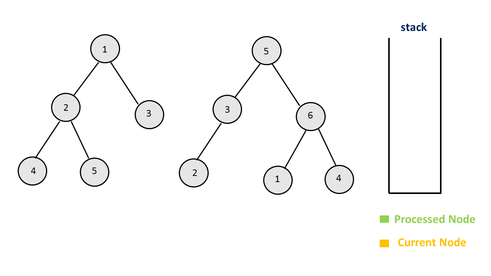

题目0617:合并二叉树
题目描述
给定两个二叉树,想象当你将它们中的一个覆盖到另一个上时,两个二叉树的一些节点便会重叠。
你需要将他们合并为一个新的二叉树。合并的规则是如果两个节点重叠,那么将他们的值相加作为节点合并后的新值,否则不为NULL的节点将直接作为新二叉树的节点。
示例1:
输入:
Tree 1 Tree 2
1 2
/ \ / \
3 2 1 3
/ \ \
5 4 7
输出:
合并后的树:
3
/ \
4 5
/ \ \
5 4 7
注意: 合并必须从两个树的根节点开始。
解题技巧
- 方法一:递归
我们可以对这两棵树同时进行前序遍历,并将对应的节点进行合并。在遍历时,如果两棵树的当前节点均不为空,我们就将它们的值进行相加,并对它们的左孩子和右孩子进行递归合并;如果其中有一棵树为空,那么我们返回另一颗树作为结果;如果两棵树均为空,此时返回任意一棵树均可(因为都是空)。

/**
* Definition for a binary tree node.
* public class TreeNode {
* int val;
* TreeNode left;
* TreeNode right;
* TreeNode(int x) { val = x; }
* }
*/
public class Solution {
public TreeNode mergeTrees(TreeNode t1, TreeNode t2) {
if (t1 == null)
return t2;
if (t2 == null)
return t1;
t1.val += t2.val;
t1.left = mergeTrees(t1.left, t2.left);
t1.right = mergeTrees(t1.right, t2.right);
return t1;
}
}
复杂度分析
时间复杂度:O(N),其中N是两棵树中节点个数的较小值。
空间复杂度:O(N),在最坏情况下,会递归N层,需要O(N)的栈空间。
- 方法二:迭代
我们也可以用迭代的方法解决这个问题。
我们首先把两棵树的根节点入栈,栈中的每个元素都会存放两个根节点,并且栈顶的元素表示当前需要处理的节点。在迭代的每一步中,我们取出栈顶的元素并把它移出栈,并将它们的值相加。随后我们分别考虑这两个节点的左孩子和右孩子,如果两个节点都有左孩子,那么就将左孩子入栈;如果只有一个节点有左孩子,那么将其作为第一个节点的左孩子;如果都没有左孩子,那么不用做任何事情。对于右孩子同理。
最后我们返回第一棵树的根节点作为答案。

/**
* Definition for a binary tree node.
* public class TreeNode {
* int val;
* TreeNode left;
* TreeNode right;
* TreeNode(int x) { val = x; }
* }
*/
public class Solution {
public TreeNode mergeTrees(TreeNode t1, TreeNode t2) {
if (t1 == null)
return t2;
Stack < TreeNode[] > stack = new Stack < > ();
stack.push(new TreeNode[] {t1, t2});
while (!stack.isEmpty()) {
TreeNode[] t = stack.pop();
if (t[0] == null || t[1] == null) {
continue;
}
t[0].val += t[1].val;
if (t[0].left == null) {
t[0].left = t[1].left;
} else {
stack.push(new TreeNode[] {t[0].left, t[1].left});
}
if (t[0].right == null) {
t[0].right = t[1].right;
} else {
stack.push(new TreeNode[] {t[0].right, t[1].right});
}
}
return t1;
}
}
复杂度分析
时间复杂度:O(N),其中N是两棵树中节点个数的较小值。
空间复杂度:O(N),在最坏情况下,栈中会存放N个节点。